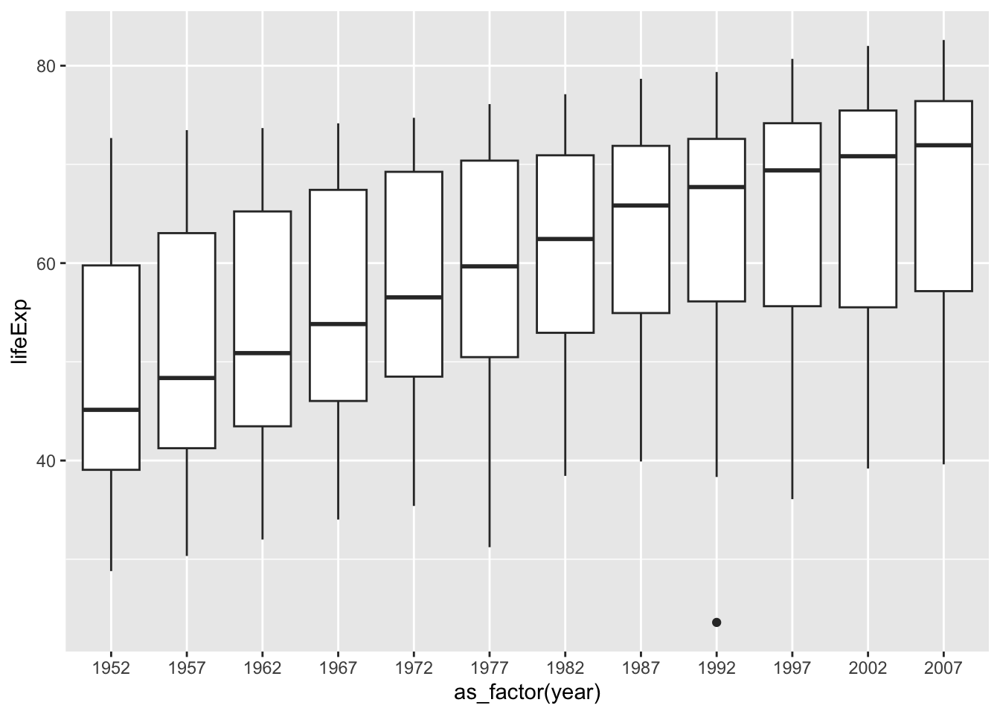
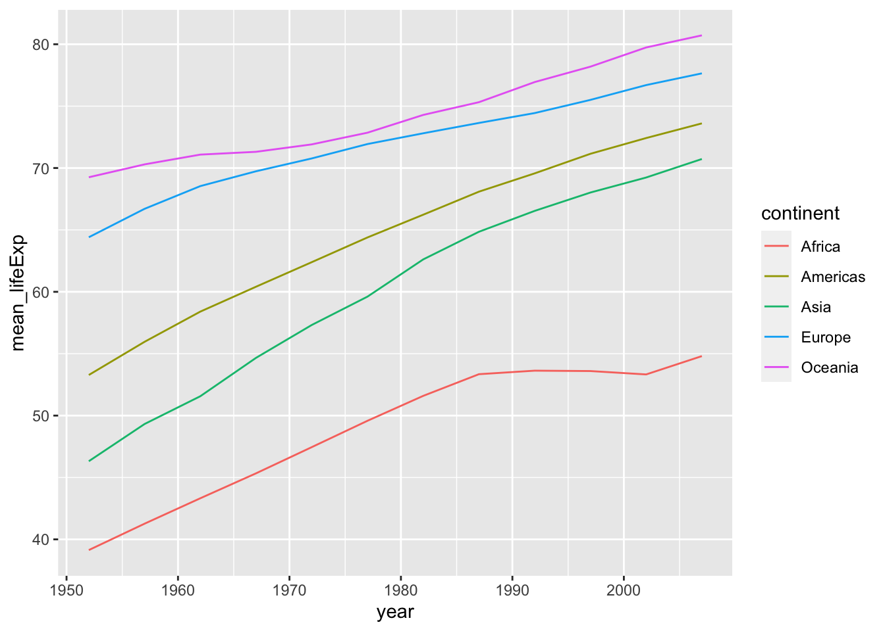
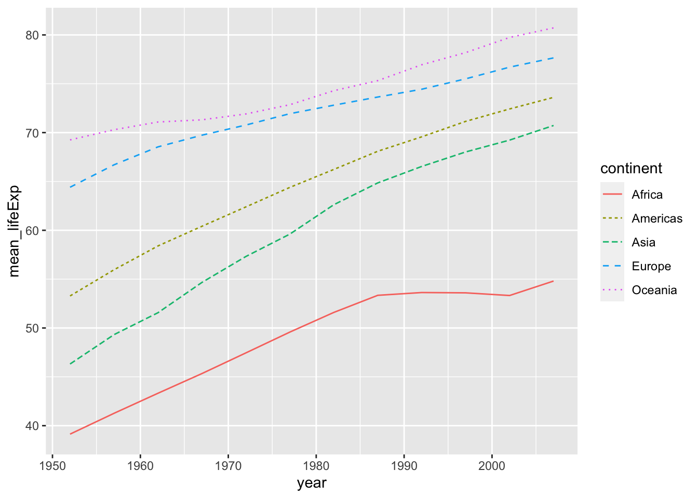
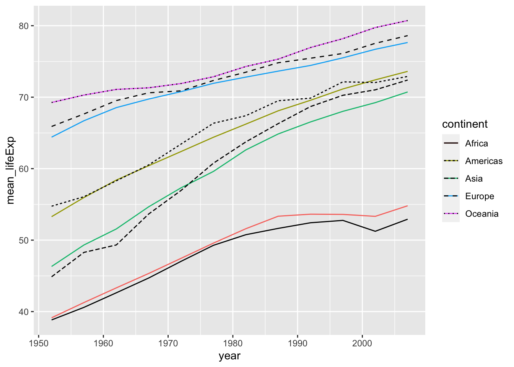

30 その他のデータベース
30.2 世界の国の政府機関
30.2.1 米国：DATA.GOV
The Home of the U.S. Government’s Open Data: https://data.gov/
30.2.2 米国国勢調査：United States Census Bureau
Explore Census Data: https://data.census.gov
30.3 ClinicalTrials.gov
ClinicalTrials.gov is a place to learn about clinical studies from around the world.
30.5 Kagle
Kagle Home: https://www.kaggle.com
Kagle Datasets: https://www.kaggle.com/datasets
30.6 Gapminder
30.6.1 パッケージ Gapminder を使って
gapminder: Data from Gapminder: https://cran.r-project.org/web/packages/gapminder/index.html
Gapminder Data: https://www.gapminder.org/data/
すでに、dplyr をつかった変形で確認しましたが、簡単に、データを見ておきましょう。
df_gm <- gapminder
df_gm %>% slice(1:10)
#> # A tibble: 10 × 6
#> country continent year lifeExp pop gdpPercap
#> <fct> <fct> <int> <dbl> <int> <dbl>
#> 1 Afghanistan Asia 1952 28.8 8425333 779.
#> 2 Afghanistan Asia 1957 30.3 9240934 821.
#> 3 Afghanistan Asia 1962 32.0 10267083 853.
#> 4 Afghanistan Asia 1967 34.0 11537966 836.
#> 5 Afghanistan Asia 1972 36.1 13079460 740.
#> 6 Afghanistan Asia 1977 38.4 14880372 786.
#> 7 Afghanistan Asia 1982 39.9 12881816 978.
#> 8 Afghanistan Asia 1987 40.8 13867957 852.
#> 9 Afghanistan Asia 1992 41.7 16317921 649.
#> 10 Afghanistan Asia 1997 41.8 22227415 635.
glimpse(df_gm)
#> Rows: 1,704
#> Columns: 6
#> $ country <fct> "Afghanistan", "Afghanistan", "Afghanist…
#> $ continent <fct> Asia, Asia, Asia, Asia, Asia, Asia, Asia…
#> $ year <int> 1952, 1957, 1962, 1967, 1972, 1977, 1982…
#> $ lifeExp <dbl> 28.801, 30.332, 31.997, 34.020, 36.088, …
#> $ pop <int> 8425333, 9240934, 10267083, 11537966, 13…
#> $ gdpPercap <dbl> 779.4453, 820.8530, 853.1007, 836.1971, …
summary(df_gm)
#> country continent year
#> Afghanistan: 12 Africa :624 Min. :1952
#> Albania : 12 Americas:300 1st Qu.:1966
#> Algeria : 12 Asia :396 Median :1980
#> Angola : 12 Europe :360 Mean :1980
#> Argentina : 12 Oceania : 24 3rd Qu.:1993
#> Australia : 12 Max. :2007
#> (Other) :1632
#> lifeExp pop gdpPercap
#> Min. :23.60 Min. :6.001e+04 Min. : 241.2
#> 1st Qu.:48.20 1st Qu.:2.794e+06 1st Qu.: 1202.1
#> Median :60.71 Median :7.024e+06 Median : 3531.8
#> Mean :59.47 Mean :2.960e+07 Mean : 7215.3
#> 3rd Qu.:70.85 3rd Qu.:1.959e+07 3rd Qu.: 9325.5
#> Max. :82.60 Max. :1.319e+09 Max. :113523.1
#>
unique(df_gm$year)
#> [1] 1952 1957 1962 1967 1972 1977 1982 1987 1992 1997 2002
#> [12] 200730.6.1.0.1 Box Plot
ggplot(df_gm, aes(x = as_factor(year), y = lifeExp)) + geom_boxplot()
fill や color を追加してみましょう。
df_gm %>% filter(year %in% c(1952, 1987, 2007)) %>%
ggplot(aes(x=as_factor(year), y = lifeExp, fill = continent)) +
geom_boxplot()
折れ線グラフの例です。
df_lifeExp <- df_gm %>%
group_by(continent, year) %>%
summarize(mean_lifeExp = mean(lifeExp), median_lifeExp = median(lifeExp), max_lifeExp = max(lifeExp), min_lifeExp = min(lifeExp), .groups = "keep")
df_lifeExp %>% ggplot(aes(x = year, y = mean_lifeExp, color = continent, linetype = continent)) +
geom_line()
df_lifeExp %>% ggplot() +
geom_line(aes(x = year, y = mean_lifeExp, color = continent)) +
geom_line(aes(x = year, y = median_lifeExp, linetype = continent))
30.6.2 Original Data? WDI?
df_gm %>% slice(1:10)
#> # A tibble: 10 × 6
#> country continent year lifeExp pop gdpPercap
#> <fct> <fct> <int> <dbl> <int> <dbl>
#> 1 Afghanistan Asia 1952 28.8 8425333 779.
#> 2 Afghanistan Asia 1957 30.3 9240934 821.
#> 3 Afghanistan Asia 1962 32.0 10267083 853.
#> 4 Afghanistan Asia 1967 34.0 11537966 836.
#> 5 Afghanistan Asia 1972 36.1 13079460 740.
#> 6 Afghanistan Asia 1977 38.4 14880372 786.
#> 7 Afghanistan Asia 1982 39.9 12881816 978.
#> 8 Afghanistan Asia 1987 40.8 13867957 852.
#> 9 Afghanistan Asia 1992 41.7 16317921 649.
#> 10 Afghanistan Asia 1997 41.8 22227415 635.さて、このデータは、どのようにして集めているのでしょうか。WDI のデータと同じでしょうか。